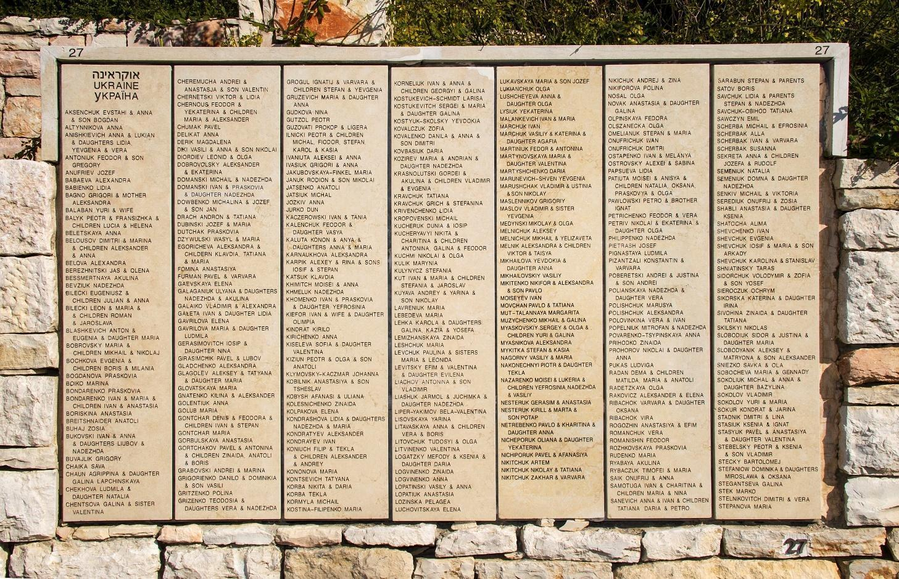
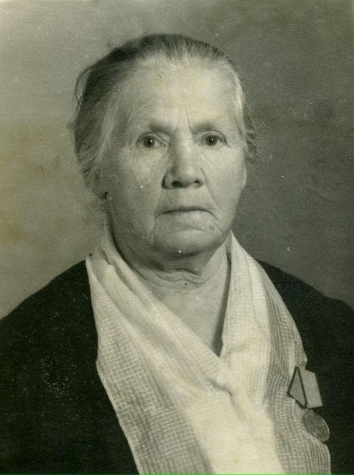
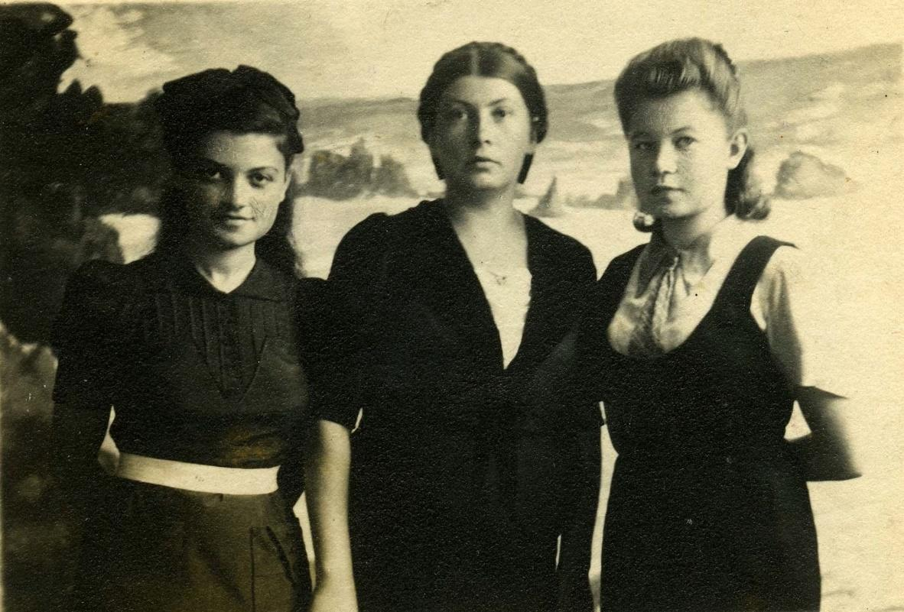

Історична карта 1945 року
Перейти до карти
До початку Другої світової війни у Вінниці проживало близько 33 тис. євреїв. Перший масовий розстріл нацистами представників єврейської національності відбувся у вересні 1941 року. Він забрав життя, за різними даними, від 12 до 15 тис. осіб, більшість з яких — жінки, діти та літні люди.
Порятунок євреїв іншими націями вважається однією із форм спротиву нацизму. У 1963 році очільники меморіалу Яд Вашем розпочали всесвітній проєкт віддання данини пам’яті Праведникам народів світу, які, ризикуючи життям, рятували євреїв під час Голокосту. Це унікальна та безпрецедентна спроба жертв віддати шану особам із націй злочинців, колабораціоністів і спостерігачів, які стояли на боці жертв і діяли в різкому контрасті з основною течією байдужості та ворожості, яка панувала в найтемніші часи історії. Визнані отримують медаль та Почесну грамоту, а їхні імена увічнюють в меморіалі Яд Вашем на Горі Пам'яті в Єрусалимі.
Звання Праведників світу 1994 року отримала і вінницька родина Радан, що складається з матері Доміцелії та її дітей: Марії, Матильди та Анатолія.

Варто зазначити, що на окупованих нацистською Німеччиною територіях СРСР умови були складнішими, ніж на окупованих територіях Західної Європи. Жителі/ки СРСР зобов’язувались доповідати про кожного єврея чи будь-яку чужу людину, яка прибула в район. Існувала заборона надавати притулок, навіть на ніч будь-якій прийшлій людині. Була необхідність утаємничувати факт спасіння від сусідів. В містах це також обтяжувалось меншою кількістю придатних для ночівлі господарчих будівель, порівняно з селами. Ще одним недоліком переховування у містах було те, що ліси, рови знаходились далеко. Окрім того, у містах була гірша продовольча ситуація. Оскільки містяни отримували їжу за продовольчими картками, поставало питання: як прогодувати врятованих євреїв? Попередження про покарання за переховування євреїв публікувалися на території Вінницької області. Покарання були жорстокими: смертна кара без суду і слідства, покарання всієї сім’ї, спалення будинків тощо.
Попри це, знаходились люди, які йшли на ризик, оскільки вони прагнули зберегти життя друзів, коханих, родичів. Або ж просто не могли стояти осторонь, розуміючи чуже горе. Звичайно, не виключається прагнення отримати матеріальні блага тими, хто рятував євреїв, але часто всі ці фактори переплітались між собою.
Також варто зазначити, що керівництво Радянського Союзу, закликаючи до розгортання підпільно-партизанської боротьби, різних її форм та методів (руйнувати, палити, всіляко шкодити ворогу в тилу), ніяк не закликало рятувати переслідуваних ворогом євреїв.
Отже, Радани, живучи у Вінниці на вул. Свердлова, 17 (нині князів Коріатовичів), врятували 48 осіб. Важливо згадати, що вони були підпільниками і часто залучали до роботи людей, яких переховували. Першою врятованою стала Берта Вулінська з Києва, яку прихистила родина, і згодом Берта стала активісткою антинацистського руху в Немирові. Після того родина допомогла переправити Берту на Трансністрію — територію південної частини Вінниччини, яку окупувала Румунія. Там було набагато безпечніше і не було масових акцій знищення євреїв. Радани також допомагали євреям виготовленням фальшивих паспортів з українським або російським прізвищем. Наприклад, подругу Матильди Раю Литвинову перейменували на Таню Стельмашевську. Згодом Матильда Радан з Раєю Литвиновою поїхали до Жмеринки, завдяки чому Рая вижила.

Дітей, що переховувалися у них, учителька Марія Радан переправляла у дитячий будинок. Ним керувала Лідія Постоловська — визначна особистість, яка теж має звання праведниці народів світу. Також родина врятувала відому у Вінниці лікарку Розу Селітерман.

Багато хто з підпільників сприймав пропаганду нацистів щодо євреїв і засуджував дії Раданів, погрожуючи розсекретити їх. На щастя, цього не сталося.
Зрештою праведником можна назвати навіть того, хто врятував одне людське життя, адже, прагнучи захистити від знищення інших, людина свідомо йшла на ризик. У цьому сенсі родина Радан — дійсно смілива і відважна. Після війни сім’я продовжувала підтримувати зв’язок і листуватись з багатьма врятованими євреями. І нащадки цих людей досі вдячні родині Радан за порятунок.
автор Зборовська Анна
Цікаві місця

Всі права захищені.